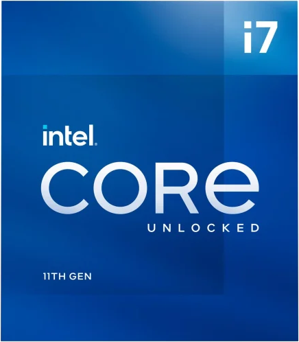
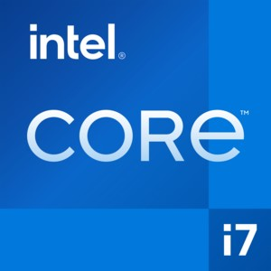
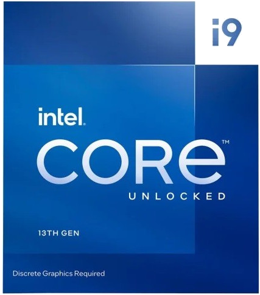

Rocekt Lake
Jest to 11 generacja procesorów Intela. Jest to ostatnia generacja używająca niesławnej już technologii 14nm++. Jak na standardy kiedy wyszedł zużywał on potworne ilości energii. Działał on na chipsecie z serii 500 oraz soketcie LGA 1200.
Alder Lake
Jest to 12 generacja procesorów Intela. W niej jako pierwszej zastosowano hybrydową architekturę rdzeni "power" tworzonych architekturą Golden Cove oraz rdzeni "efficient" stworzonych architekturą Gracemont. Działał on na chipsecie z serii 600 oraz soketcie LGA 1700. Jako pierwszy wprowadził on wsparcie dla RAM DDR5 i PCIe gen 5.
Raptor Lake
Jest to 13 generacja procesorów Intela. Jest ona ulepszeniem 12 generacji. Główne zmiany jakie zaszyły to: zmiększenie częstotliwości zegara, dodanie kolejnych 8 rdzenie efficient, zwiększenie wydajności oraz ulepszenie wsparcia do pamięci DDR5
